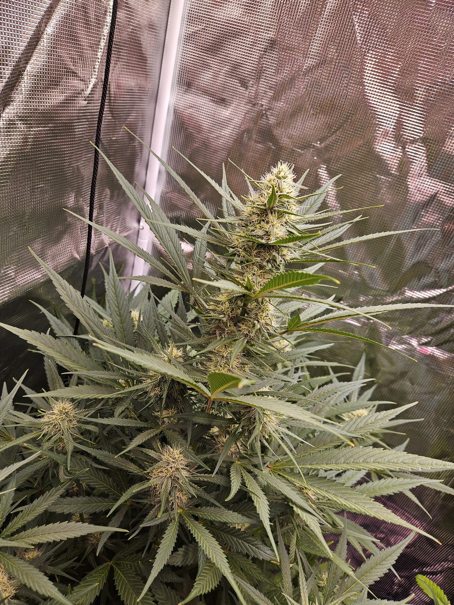
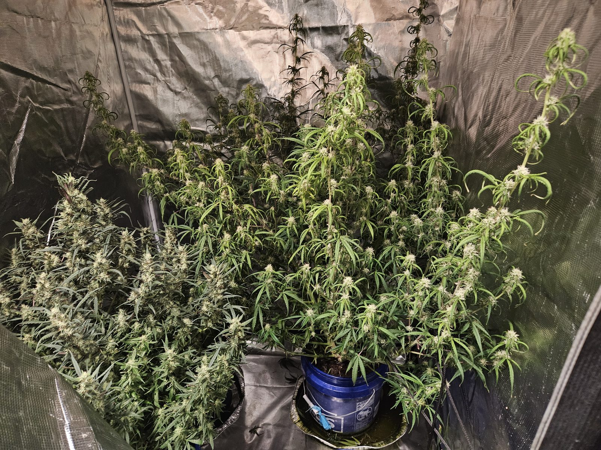
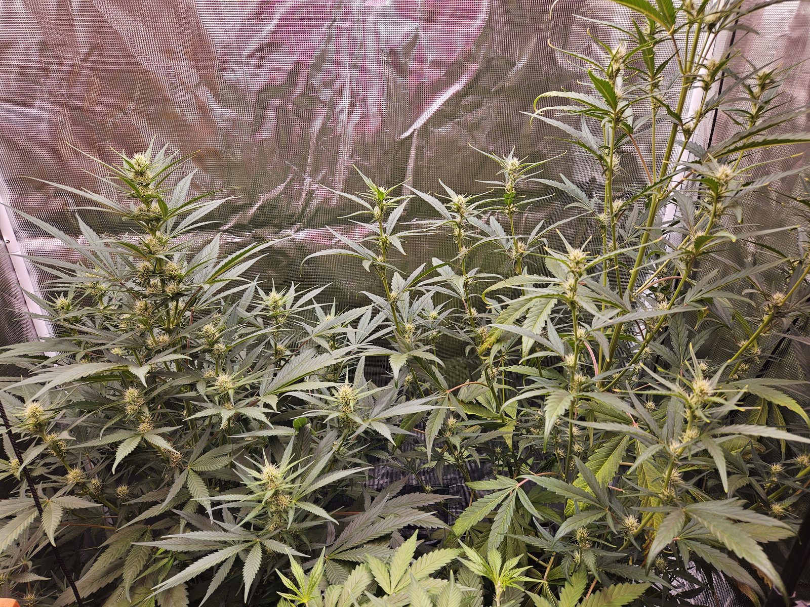
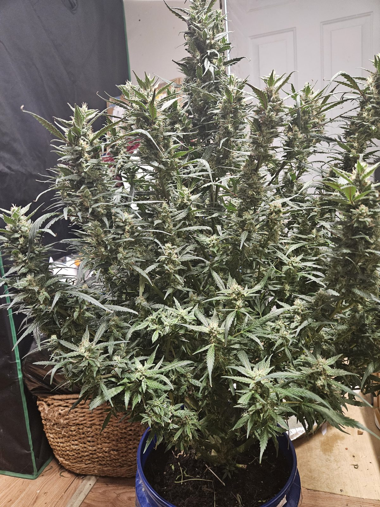
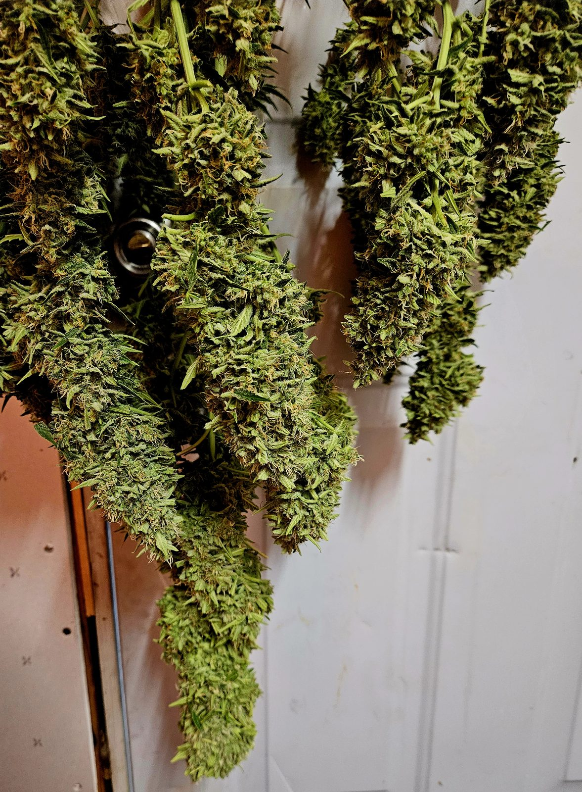

The Fabrizio Method
Grow beautiful plants, the Fabrizio way.
Everything you need, seed to cure. Strains, grow methods, pest ID, harvest, and a journal to track it all.
Quick Picks
❓ Quizzes
Pick a quiz, answer a few questions, get Fabrizio's recommendation.
🌿 What strain should I grow?
🏠 Indoor, outdoor, or hydro?
🐛 What bug is that?
✂ Is she ready to harvest?
🧠 Deficiency or disease?
💧 Why is my pH drifting?
Section 1
🌿 Strains
Indica, sativa, hybrid, autoflower — what each one means for how you grow.

Indica Indica
Structure: Short, bushy, 2–4 ft; broad dark leaves; dense compact buds.
Flower: 7–9 weeks (fast). Best for: Indoor, beginners.
Handles cooler temps, lower humidity; uniform growth; great for small spaces.
Sativa Sativa
Structure: Tall, lanky, 6+ ft; narrow light-green leaves; airy elongated buds.
Flower: 10–16 weeks (slow). Best for: Outdoor, experienced growers.
Needs heat and long seasons. Virginia summers suit outdoor sativas.
Hybrid Hybrid
Structure: Mix of indica/sativa traits; moderate height; varied bud density.
Flower: 8–10 weeks. Best for: All skill levels.
Usually the easiest to grow; most modern strains are hybrids.
Autoflower Auto
Structure: Compact 1–3 ft; flowers on age, not light schedule.
Seed to harvest: 60–90 days. Best for: Beginners & Virginia outdoor.
Very forgiving. Multiple harvests per season. Slightly lower yields.
Photoperiod vs. Autoflower — quick decision
| Question | Photoperiod | Autoflower |
|---|---|---|
| Growing indoors? | If you can control lighting | Great — simpler setup |
| Growing outdoors in VA? | Follows natural seasons, Oct harvest | Faster, more harvests, more discreet |
| First grow? | Possible but more to manage | Strongly recommended |
| Max yield/potency? | Yes | Not primary goal |
| Limited space? | No | Yes |
Beginner-recommended strains
One of the most forgiving strains ever bred. Compact, pest-resistant, dense resinous buds. The classic first grow.
Very popular, blueberry + haze parentage. Tolerant of beginner mistakes. Works well outdoors in VA.
Legendary genetics, stable, trichome-heavy. Forgiving in varied conditions.
Complex earthy-sweet terpene profile. Dense buds. Indoor preferred.
Famous for extreme resin production. High-yielding, very sticky. Responds well to training.
Long flowering but rewarding. Great outdoor strain for VA summers. Citrus terpenes.
The classic made easy. Plant in May, harvest in July. VA outdoor-perfect.
High-potency auto. Dense, resinous. Very forgiving.
Sativa-leaning flavor and effect in an autoflower format.
Ultra-compact and ultra-fast. Perfect for balconies and stealth grows.
Fruity tropical terpenes. Very popular. Good yields for an auto.
Cannabinoids & terpenes — quick explainer
THC: primary psychoactive compound. Aim for 15–25% in most home grows.
CBD: non-intoxicating; relaxation, anti-anxiety, anti-inflammatory associations.
CBN: increases with late harvest; associated with sedation. CBG: “mother cannabinoid.”
| Terpene | Aroma | Associated with |
|---|---|---|
| Myrcene | Earthy, musky, mango | Relaxing, sedative |
| Limonene | Citrus, lemon | Uplifting, mood |
| Pinene | Pine, fresh | Alertness, memory |
| Linalool | Floral, lavender | Calming, stress relief |
| Caryophyllene | Pepper, spice | Anti-inflammatory |
| Humulene | Hoppy, earthy | Appetite-suppressing |
| Terpinolene | Fresh, piney, floral | Uplifting |
Entourage effect: cannabinoids and terpenes work together — the full chemical profile shapes the experience, not just THC%.
Section 2
🏠 Indoor Growing
Full control over light, temperature, and humidity. Year-round, compact, and easy to keep private.

Core setup
1. Grow tent
4×2 or 4×4 for up to 4 plants.
2. LED grow light
Full spectrum, sized to tent.
3. Inline fan + carbon filter
Odor control — essential.
4. Circulation fan
Strengthens stems, prevents hotspots.
5. Fabric pots
3–5 gallon; air-pruning roots.
6. Medium
Soil or coco coir.
7. Nutrients
Veg + bloom formulas.
8. pH meter
Non-negotiable.
9. Timer
Automates light schedule.
10. Hygrometer
Monitor temp + RH.
Environment targets
| Parameter | Seedling | Vegetative | Flowering | Late Flower |
|---|---|---|---|---|
| Temperature | 72–80°F | 70–85°F | 65–80°F | 60–75°F |
| Humidity (RH) | 65–70% | 50–70% | 40–50% | 30–40% |
| Light hours | 18/6 | 18/6 | 12/12 | 12/12 |
| pH (soil) | 6.0–7.0 | 6.0–7.0 | 6.0–7.0 | 6.0–7.0 |
Lighting — schedules, spectrum, sizing
Schedules: Seedling/veg 18/6; flip to 12/12 to trigger flowering. Autoflowers stay on 18/6 for their entire life.
Spectrum: Blue (400–500 nm) for veg, red (620–750 nm) for flower. Full-spectrum LED covers both — ideal.
| Tent | Plants | LED wattage (actual) |
|---|---|---|
| 2×2 | 1–2 | 200–300W |
| 4×2 | 2–4 | 300–400W |
| 4×4 | 4 (VA max) | 400–600W |
LED distance: seedling 24–36", veg 18–24", flower 12–18".
Containers & growing medium
Fabric pots beat plastic — roots air-prune naturally, no circling, better oxygen, better yield.
| Medium | pH | Difficulty | Notes |
|---|---|---|---|
| Pre-amended organic soil | 6.0–7.0 | ⭐ Easiest | Fox Farm Ocean Forest — built-in nutrients. |
| Coco coir | 5.8–6.3 | ⭐⭐ Moderate | Faster growth; needs full nutrients early. |
| Hydroponics | 5.5–6.3 | ⭐⭐⭐ Advanced | See Hydroponics section. |
Beginner pick: Fox Farm Ocean Forest pre-amended soil.
Ventilation & odor control
Carbon filter → flexible ducting → inline fan → out of tent. Scrubs odor before air leaves.
Air exchange: replace tent volume every 1–3 minutes; match fan CFM to tent volume.
Safety: install CO2 detectors. Don't overload circuits. Turn off UV lights before working in the tent.
Section 3
☀ Outdoor Growing in Virginia
Virginia sits in USDA zones 5–8 (most of the state in 6–7). Warm humid summers are perfect for growth — just watch the humidity as harvest gets close in fall.

Virginia outdoor calendar
| Month | Task |
|---|---|
| March–April | Start seeds indoors; prepare beds/containers |
| Late April–May | Transplant seedlings after last frost (zones 6–7: mid-May) |
| May–July | Vegetative growth; train; fertilize; manage pests |
| Late July–August | Plants enter flowering naturally (shorter days) |
| August–September | Flowering progresses; airflow; watch for bud rot |
| September–October | Harvest window; check trichomes weekly |
| Late October | Final harvest before first frost |
Site selection
- 6–8+ hours direct sun, south-facing ideal
- Not visible from public — solid fence or hedge
- Inaccessible to under-21 — locked gate
- Good drainage; cannabis hates wet feet
- Natural airflow reduces disease pressure
Soil prep
Rich, loamy, well-draining soil, pH 6.0–7.0. Soil test first — Virginia Cooperative Extension offers free/low-cost tests.
- Aged compost worked into top 12 in
- Worm castings per plant hole
- Perlite for drainage in clay soil
- Dolomitic lime if pH below 6.0
Watering
Deep and infrequent. Let top 2 in dry between waterings. Avoid overhead watering in late flower. Drip or soaker hose is ideal.
Mulch & support
2–3 in of organic mulch (straw, wood chips) retains moisture and suppresses weeds. Stake early — VA summer storms can topple big plants.
Companion planting for cannabis
| Plant | Benefit |
|---|---|
| Marigolds | Deter aphids, spider mites, nematodes |
| Basil | Repels aphids, thrips |
| Dill (flowering) | Attracts parasitic wasps |
| Lavender | Repels moths that lay caterpillar eggs |
| Clover | Nitrogen fixation; beneficial insect habitat |
Section 4
💧 Hydroponics
Nutrient-enriched water, no soil. Up to 50% faster growth and 90% less water — with no buffer if your pH or EC drifts.
DWC (Deep Water Culture)
RecommendedOne plant per 5-gallon bucket, roots suspended in oxygenated nutrient solution. Simple DIY or kit. Outstanding quality with a dialed-in EC.
Kratky Method
Passive DWC — no pump or electricity. Plant sits above reservoir with air gap. Good for autoflowers in small setups.
Coco coir + drip
Technically soilless. Faster than soil, more forgiving than pure DWC. Great hydro bridge. pH target 5.8–6.2.
Essentials
- pH target 5.8–6.3 (check every 2–3 days)
- Reservoir temp 65–72°F (warm = root rot)
- Full flush every 2 weeks
- CalMag, Hydroguard, silica supplements
EC targets by stage
| Stage | EC (mS/cm) |
|---|---|
| Seedling | 0.4–0.8 |
| Early vegetative | 0.8–1.3 |
| Vegetative | 1.3–1.7 |
| Early flower | 1.7–2.2 |
| Peak flower | 2.2–2.8 |
| Late flower / flush | Taper down to 0 |
Section 5
🌱 Grow Stages
Click a stage to see what's happening, what to do, and what to watch for.


Training techniques at a glance (veg only)
| Technique | Difficulty | Benefit |
|---|---|---|
| LST (Low Stress Training) | ⭐ | Tie branches down to spread canopy |
| Topping | ⭐⭐ | Cut main tip → 2 main colas |
| FIMing | ⭐⭐ | Like topping, less precise — 4 tops |
| SCROG | ⭐⭐⭐ | Horizontal screen for even canopy |
| SoG (Sea of Green) | ⭐⭐ | Many small plants flowered early |
| Defoliation | ⭐⭐ | Remove leaves blocking bud sites |
Autoflowers: LST only — do NOT top or FIM. They can't recover in time.
NPK shift across the grow
- Veg: ~3:1:2 (N-dominant)
- Early flower: ~1:3:2
- Peak flower: ~1:3:4 (P/K-dominant, low N)
- Flush: 0:0:0 (plain water, final 1–2 weeks)
Sexing plants (photoperiod only)
Only female plants produce buds. Males produce pollen sacks and should be removed immediately.
- Female: white hair-like pistils at nodes
- Male: small round pollen sacks at nodes
- Hermaphrodite: both — usually stress-induced; remove
Buying feminized seeds eliminates this concern — 99%+ female.
Section 6
🐛 Pest & Disease ID

Pests
#1 indoor pest. Fine webbing under leaves, tiny yellow/white stippling, bronze leaves in heavy infestations. Shake a leaf over white paper to confirm.
Treat: strong water spray to undersides, neem oil every 3 days, insecticidal soap, predatory mites. Keep RH above 60% in veg.
Tiny dark flies around soil. Larvae in top inch eat roots — stunts growth, kills seedlings.
Treat: let soil dry between waterings, yellow sticky traps, beneficial nematodes, Bti drench.
Clusters on new growth and undersides. Sticky honeydew. Can spread hop latent viroid between plants.
Treat: water blast, insecticidal soap, neem oil, ladybugs or lacewings.
Silver/bronze streaks on leaves. Tiny tan or yellow 1 mm fast-movers. Black dropping specks.
Treat: spinosad (most effective), insecticidal soap, blue sticky traps, Amblyseius cucumeris.
Cloud of white insects when plant is disturbed. More common outdoors in humid VA summers.
Treat: yellow sticky traps, insecticidal soap, neem oil.
Holes in leaves, black droppings, tunnels inside buds. Corn earworm is the most destructive VA outdoor pest.
Treat: Bt kurstaki, spinosad, handpick, Trichogramma wasps.
New growth blistered, twisted, glossy, small. Often misdiagnosed. Invisible without 60x+ scope.
Treat: neem oil, predatory Neoseiulus mites, spinosad.
Diseases
The most devastating disease for VA outdoor. Buds look fine outside but gray/mushy/slimy inside. Starts in dense bud tissue — easily missed.
Act immediately: cut 2–3 cm beyond visible rot, sterilize scissors, don't compost, improve airflow, lower RH. Affected buds are unsafe.
White flour-like coating on leaves/stems. Can spread to buds — infected buds must be discarded.
Treat: remove leaves; potassium bicarbonate spray; milk spray (1:9); improve airflow. RH below 50% in flower.
Primary hydro/coco threat. Roots brown, slimy, foul-smelling. Plant wilts with adequate water.
Treat: drain & replace reservoir, add Hydroguard, lower temp below 68°F, increase air stones.
Seedling collapses at soil line overnight. Caused by Pythium/Botrytis in wet conditions.
Prevent only: well-draining mix, don't overwater, gentle airflow. No treatment once it strikes.
Nutrient deficiency vs. disease — how to tell
| Symptom | Likely cause |
|---|---|
| Yellowing on lower, older leaves | Nitrogen / mobile-nutrient deficiency |
| Yellowing on upper, newer leaves | Calcium/iron (immobile nutrients) |
| Brown irregular spots | Calcium deficiency or fungal disease |
| White powdery coating | Powdery mildew |
| Webbing on undersides | Spider mites |
| Blistered twisted new growth | Broad mites, heat stress, or pH issue |
| Wilts despite adequate water | Root rot, overwatering, or fusarium |
General rule: check pH first. Most “mystery deficiencies” are nutrient lockout from pH out of range.
Organic spray reference
| Product | Treats | Notes |
|---|---|---|
| Neem oil | Mites, aphids, PM, fungus gnats | Apply early — NOT on buds near harvest |
| Insecticidal soap | Mites, aphids, whiteflies, thrips | Contact killer; safe in early flower |
| Spinosad | Caterpillars, thrips, fungus gnats | OMRI-listed; very effective |
| Bt (kurstaki) | Caterpillars only | OMRI-listed |
| Bti | Fungus gnat larvae | Soil drench |
| Potassium bicarbonate | Powdery mildew | Surface pH change |
| Beneficial nematodes | Fungus gnats, root pests | Soil drench |
| Predatory mites | Spider / broad mites | Best biocontrol; veg + early flower |
| Hydroguard | Root rot prevention | Day-1 reservoir additive |
Important: stop all foliar sprays at least 4–6 weeks before harvest.
Section 7
✂ Harvest & Cure
The last 2 weeks, harvest day, and the cure decide 40–50% of your final quality. Worth getting right.

Reading trichomes — interactive slider
Immature. THC not fully developed — wait longer before harvesting.
| Goal | Trichome ratio |
|---|---|
| Max THC potency | 70–90% cloudy, 5–10% amber, minimal clear |
| Balanced effect | 50–70% cloudy, 20–30% amber |
| Relaxing / sedative | 70%+ amber |
Step 1 — Flushing
Plain pH-adjusted water for the final 1–2 weeks. Removes residual nutrient salts, cleaner taste.
- Soil: 1–2 weeks
- Coco: 1 week
- Hydro: 3–7 days
Step 2 — Harvest day
Morning after dark period, sterile sharp scissors, gloves. Cut branches; remove large fan leaves immediately.
Virginia humidity: wet trim is generally recommended.
Step 3 — Drying (the hang)
The most important week of the whole grow. Rush it and you lose terpenes, gain a hay smell, and no cure will save you.
The room
- Temperature: 60–70°F (65°F ideal)
- Humidity: 55–62% RH
- Light: total darkness — light degrades THC
- Airflow: gentle, indirect; small fan pointed at a wall, not the buds
- No heat sources nearby (heater, dehumidifier exhaust, sunlit window)
How to hang
- Hang whole branches upside-down on a wire, coat hanger, or drying line
- Or lay on mesh drying racks if branches are awkward
- Give every bud space to breathe — no crowding
- Remove large fan leaves (wet trim), leave sugar leaves on for slower drying
- Check daily; rotate position if the room isn't even
Target: 7–14 days
Done when: a small interior stem snaps cleanly when bent. Larger stems still slightly flexible is fine. Outer bud feels dry to the touch but not crumbly.
Too fast? Hay/grass smell = drying too fast. Bump humidity and lower temp.
Too slow? RH above 65% risks mold. Gently increase airflow.
Step 4 — Curing (Fabrizio's paper-bag method)
Skip the mason jars. Paper bags breathe on their own — no burping schedule, no ammonia scare, much lower mold risk. Here's how.
💼 Paper bags
- Take down the hang when small stems snap cleanly (7–14 days).
- Trim sugar leaves off if you haven't already.
- Fill plain brown paper bags (grocery or lunch size) about 2/3 full. Fold the top over loosely — don't seal.
- Store bags in a cool, dark, low-humidity room (60–68°F, 55–62% RH).
- Rotate the buds gently every day or two — reach in, shuffle, re-fold the top.
- 2–3 weeks in bags, then transfer to final storage (see below).
Why paper bags win
- Self-regulating: paper breathes, so moisture equalizes on its own. No burping.
- Lower mold risk: a forgotten jar can go ammonia-funky overnight. A forgotten bag just keeps breathing.
- Evens out uneven drying: wetter pieces release moisture to drier pieces through the bag.
- Mellows the chlorophyll flavor (“green” harshness) much the same way a jar cure does.
- Cheap and disposable — no special equipment.
Paper-bag do's and don'ts
- Do use plain brown kraft paper. Not glossy, not printed, not recycled newsprint.
- Do keep bags off concrete floors (they'll wick moisture). Shelf or table is fine.
- Do separate by strain and by wetness — don't mix a drier batch with a wetter one.
- Don't overpack. 2/3 full, max, so buds can move when you rotate.
- Don't use plastic-lined bags, wax bags, or anything that stops airflow.
- Don't leave in a humid room (bathroom, basement). Moisture will come back in.
After the bag — final storage
Once the bag stage is done (2–3 weeks), bud is cured enough for day-to-day use. For longer keep, move to sealed containers only once fully cured:
- Glass jars or grove bags, 55–62% RH, cool dark storage
- Boveda / Integra Boost 62% packs as an insurance policy
- Well-cured flower stored properly keeps for 1–2 years
Jar method (alternative, if you prefer)
Some growers swear by jars. It works, it's just more hands-on:
- Airtight wide-mouth mason jars, filled 3/4 full
- Burp daily for the first 2 weeks, 10–15 min each
- Burp every 2–3 days through week 4, weekly after
- Ammonia smell = too wet — leave open longer and check for mold
- Above 65% RH: mold risk — dry further. Below 50%: add humidity pack
Bag method or jar method — pick one, don't mix. Switching mid-cure usually makes things worse.
How long should I cure?
Minimum 2 weeks to smoke comfortably. Ideal 4–8 weeks — the flavor and smoothness transformation is dramatic. Exceptional 3–6 months for collectors.
You'll know it's working when the smell shifts from “green/grassy” to rich, complex, strain-specific aroma.
Harvest sequence checklist
Tap to check off — progress saved locally.
- Trichomes predominantly cloudy with target amber %
- 70–90% of pistils darkened
- Buds dense and swollen
- Flush complete (7–14 days plain water)
- Fan leaves showing natural yellowing
- Aroma at peak intensity
- Drying space prepared (60–65°F, 55–62% RH, dark, gentle airflow)
- Tools sterilized (isopropyl, clean scissors)
- Plain brown paper bags on hand for the cure
Grower's log
📖 Grow Journal
Log feedings, training, pest checks, pH readings — anything you want to remember. Saved to this browser only.
Entries save locally in your browser. No account. No server. Clearing cookies/site data will erase them — export if you care.
Section 8
🛒 Shop
Seeds, tents, nutrients, and cure gear. Every seed bank listed ships to Virginia.
Seeds
| Vendor | Specialty | Notes |
|---|---|---|
| Homegrown Cannabis Co. | Wide selection, feminized + auto + CBD | Beginner-friendly guides |
| ILGM | Beginner favorite | Germination guarantee |
| Seedsman | Massive catalog, European genetics | Ships to VA |
| Royal Queen Seeds | Premium European genetics | Excellent quality |
| Herbies Seeds | Large catalog | Competitive prices |
| Crop King Seeds | Canadian | Reliable germination |
Look for feminized (nearly all female) and autoflowering (no light schedule) seeds.
Indoor equipment
| Product | Notes |
|---|---|
| Spider Farmer SF-2000 LED | Excellent mid-range LED, Samsung diodes, 4×2 |
| Mars Hydro TS-1000 LED | Budget full spectrum, 2×2–3×3 |
| AC Infinity CLOUDLAB 844 Tent | Heavy-duty 4×4 |
| AC Infinity CLOUDLAB 632 Tent | 2×4 for 1–2 plants |
| AC Infinity CLOUDLINE T4 fan | Very quiet, speed controller |
| Vivosun carbon filter | Odor control for 4×4 |
| 5-gal fabric pots (10-pack) | Best container for cannabis |
| Digital hygrometer/thermometer | Get 2 (tent + drying room) |
| Smart outlet/timer | Automate light schedule |
| Jeweler's loupe 60x | Trichome inspection |
| USB digital microscope | Phone-connected trichome viewing |
Hydroponics
| Product | Notes |
|---|---|
| GH WaterFarm complete kit | Good DWC starter |
| GH Flora Trio | Industry-standard 3-part |
| Advanced Nutrients pH Perfect | Auto-adjusts pH |
| Apera pH20 meter | Accurate, affordable |
| Bluelab Truncheon EC meter | Simple EC/PPM |
| Botanicare Hydroguard | Root rot prevention |
| Botanicare CalMag Plus | Ca/Mg supplement |
| Hydroton clay pebbles | Standard DWC medium |
| Canna Coco Pro Plus | Premium coco coir |
Supplies & pest management
| Product | Use |
|---|---|
| Fox Farm Ocean Forest soil | Fabrizio's pick — best pre-amended beginner soil |
| Fox Farm Trio | Complete soil nutrient system |
| GH pH Up & Down | pH adjustment |
| Rapid Rooter plugs | Germination & cloning |
| LST clips | Low-stress training |
| Plant yo-yos | Late-flower branch support |
| Plain brown paper bags (kraft) | Fabrizio's cure method — grocery or lunch size |
| Boveda 62% packs | Insurance for long-term storage after the bag cure |
| Wide-mouth mason jars | Optional — alternative cure or final storage |
| Trimming scissors (curved) | Bud trimming |
| Monterey Bt / Spinosad | Caterpillars / thrips (OMRI) |
| Safer Insect Killing Soap | Aphids, mites, whiteflies |
| Milstop (K bicarbonate) | Powdery mildew |
| Beneficial nematodes | Fungus gnat larvae |
| Predatory mite sachets | Spider mite biocontrol |
Appendix A
Quick Reference
Environment
- Veg: 70–85°F / 50–70% RH / 18/6
- Flower: 65–80°F / 40–50% RH / 12/12
- Late flower RH: 35–45% (bud rot)
- Autoflowers: 18/6 throughout
pH
Soil: 6.0–7.0
Hydro: 5.8–6.3
Check pH first when troubleshooting.
Nutrient direction
- Veg: N-heavy (3:1:2)
- Flower: P/K-heavy (1:3:4)
- Final 1–2 weeks: flush (plain water)
Harvest trichome targets
- Max THC: 70–90% cloudy, <10% amber
- Balanced: 50–70% cloudy, 20–30% amber
- Sedative: 70%+ amber
Dry & cure
Dry: 60–65°F / 55–62% RH / dark / gentle airflow / 7–14 days — done when small stems snap.
Cure (Fabrizio): plain brown paper bags, 2/3 full, top folded over. Rotate gently every day or two. 2–3 weeks, then final storage.
Virginia law — 5 rules
- 4 plants per household max
- Primary residence only
- Not visible from public
- Inaccessible to under-21
- Tag every plant
Appendix B
Glossary
Photoperiod
Strain that flowers based on light schedule (12/12).
Autoflower
Strain that flowers based on age, not light.
Feminized
Seeds bred to produce only female plants (99%+).
Trichomes
Tiny resin glands on buds; contain THC, CBD, terpenes.
Calyx
Small structure forming each bud — trichome-dense.
Cola
Main bud cluster at top of plant or branch.
Node
Point on stem where branches emerge.
Topping
Cutting main stem tip to create two main colas.
LST
Low-Stress Training — tying branches down.
SCROG
Screen of Green — horizontal net to train canopy.
Flip
Switch from 18/6 to 12/12 to trigger flowering.
Flush
Feeding only plain water before harvest.
Terpenes
Aromatic compounds driving smell, flavor, effect.
EC / PPM
Measures of nutrient concentration in solution.
RH
Relative humidity.
IPM
Integrated Pest Management — prevention-first.
Wet / Dry trim
Trim sugar leaves right after harvest vs. after drying.
Burping
Opening curing jars briefly to exchange air.
Pistils
Hairs on buds; change from white to orange/red at maturity.
Appendix C
⚖ Virginia Law
The short version — the rules that matter if you're growing at home in Virginia.
| Rule | Detail |
|---|---|
| Who can grow | Adults 21+ |
| How many plants | 4 per household (not per person) |
| Where | Your primary residence |
| Visibility | Not visible from public view |
| Access | Inaccessible to anyone under 21 |
| Plant tag | Name, VA ID, “personal use” on every plant |
| Selling | Not allowed |
| Concentrates | No home-made extracts |
| Sharing | Up to 1 oz with other adults 21+, no payment |
| Renters | Check your lease |
Full rules: Virginia CCA — Home Cultivation